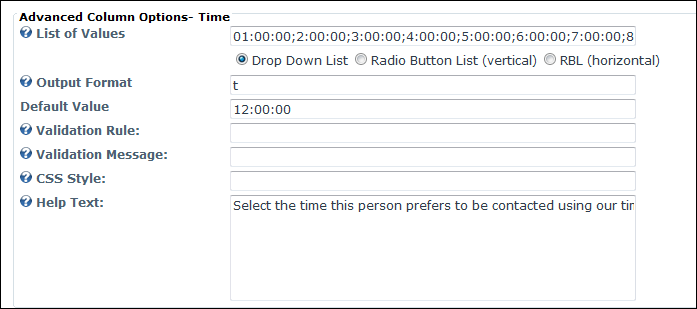

Advanced Time Column Options
How to configure the optional Advanced Column Options for Time columns for a form or list in the Form and List module. This tutorial assumes you are currently adding or editing a time column.See "Creating a List", "Creating a Form" or "Editing List or Form Columns"
Error: An error occurs when a List Of Values is entered for Time columns. It is recommended that Advanced Options are not used.
- Go to the Advanced Column Options section and set any of the following optional fields:
- At List of Values set the following:
- In the List of Values text box, enter a list of times that can be selected. E.g. 12:00:00;12:00:01;
- Select how the list options are displayed:
- Drop Down List: Display values in a drop down selection list. This is useful when there are a lot of values.
- Radio Button List (Vertical): Display values in a vertical list with radio buttons.
- RBL (Horizontal): Display values in a horizontal list with radio buttons.
- In the Output Format text box, enter the format to set how the column data will be displayed in the table. The following options are available:
- t: Enter to display a short time. E.g. 8:00 AM.
- T: Enter to display standard format long time - OR - Leave this field blank. E.g. 8:00:00 AM.
- In the Default Value text box, enter the default value for this field. When creating a new row this value will automatically populate the field, however it can be changed.
- In the Validation Rule text box, enter the required input pattern using the "Regular Expression" language. See MSDN Library for more on expressions.
- In the Validation Message text box, enter the message to be displayed if the value entered is incorrect for the validation rule.
- In the CSS Style text box, enter the Style which is applied on text box or list control in form. E.g. width:300px
- In the Help Text text box, enter a help message to assist users when they add and manage data for this column.

Setting the Advanced Options for a Time column